1. 스헤베닝겐의 바다 풍경
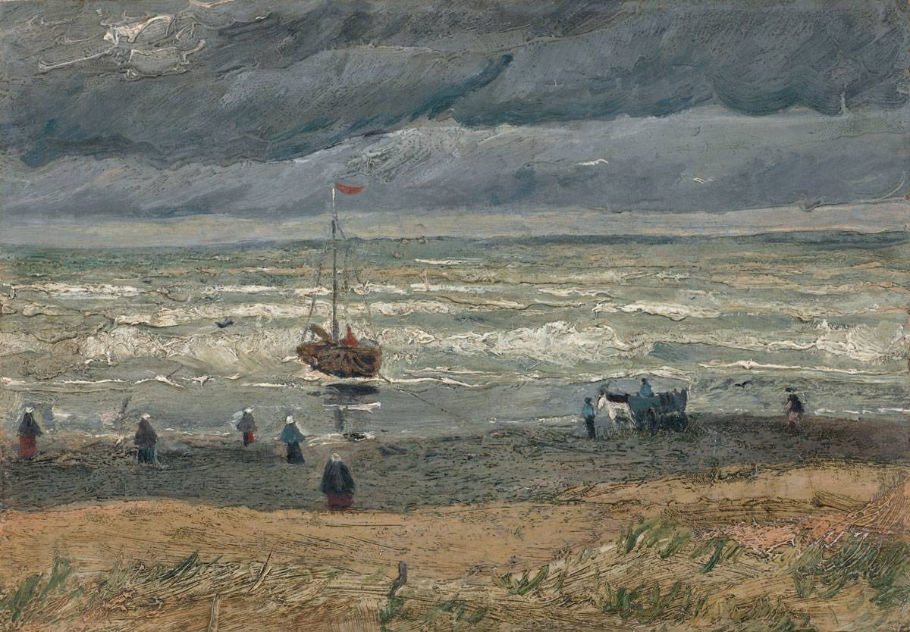1882.08
'스헤베닝겐의 바다 풍경' 또는 '폭풍 날씨 속의 스헤베닝겐 바다'로 불리는 이 그림은 안톤 모베의 지도하에 그린 두 번째 그림이다. 고흐는 바닷가의 황량한 벌판 위에 이젤을 세우고 모래바람이 부는 가운데 해변에서 빠른 속도로 캔버스 위에 바다 풍경을 그렸다. 모래와 바닷물과 어두운 하늘의 윤곽을 그리기 위해 드넓은 수평 공간을 사용한 대담한 구성법은 짙고 표현력 있는 물감 사용과 잘 조화를 이루고 있다. 바닷가의 현장을 사실적으로 표현한 방식을 통해 고흐가 동시대의 인상주의를 잘 인식하고 있음을 알 수 있다. 고흐는 흩날리는 모래와 젖은 페인트에 달라붙는 바람과 싸우며 그림을 그렸는데 대부분은 그림에서 제거했지만 몇 개의 입자들이 일부 페인트 사이에 여전히 남아 있다.
2. 감자 먹는 사람들
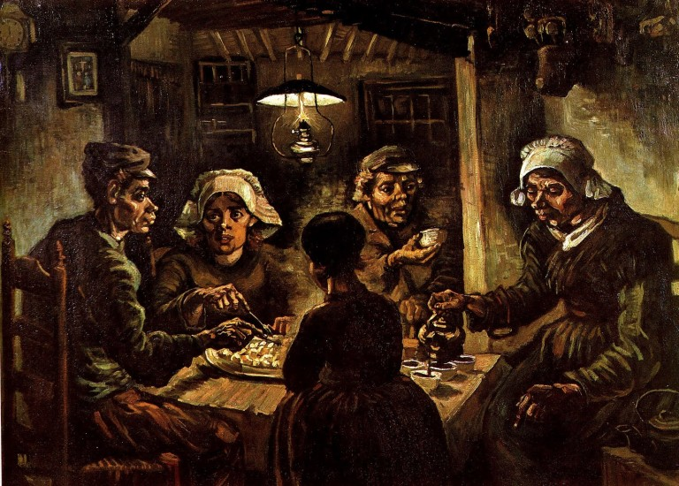1885.05
'감자 먹는 사람들'은 고흐의 걸작 중 하나로 꼽힌다. 네덜란드 뉘넨에서 지내던 시절 씨를 뿌리고 부지런히 사는 농부들의 삶을 보고 자신도 농부처럼 열심히 살아야겠다고 다짐한 고흐는 석유 램프의 불빛이 가물거리는 어두운 방에서 다섯 명의 흙빛 사람들이 감자를 먹는 그림을 그렸는데 농부들이 힘들게 살아가는 농촌 생활의 고달픈 현실을 묘사하고 있따. 거친 얼굴과 크고 마디투성이인 손, 먼지가 묻은 감자처럼 그린 그림은 화가로서 자신의 길을 가겠다는 것을 보여준다. 그러나 그림이 어둡고 인물들이 오류로 가득 차 있다는 이유로 비난을 받았지만 고흐 스스로 그린 그림 중 가장 최고라고 자평한 작품이다.
3. 회색 펠트모자를 쓴 자화상
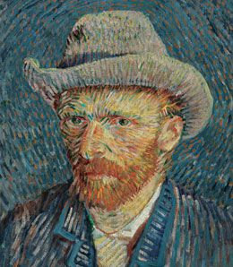1887.10
회색 펠트모자를 쓴 자화상은 암스테르담 반 고흐 미술관의 입구에 걸려 관객을 가장 먼저 반기는 대표작이다. 역동적인 필치와 별빛처럼 반찍이는 원색의 향연, 앙상하게 마른 얼굴과 화려한 색채의 대비는 반 고흐의 고뇌에 찬 내면을 한층 강렬하게 표현해준다. 전체적으로 아주 밝은 색의 물감을 많이 활용하였는데, 자화상의 중요 부분인 얼굴은 흰색, 분홍색, 노란색이 어우러져 있고 간간히 초록색이 활용되어 매우 화려하게 보이도록 했다. 이 작품은 1978년 한 관람객이 칼로 X자 모양으로 찢는 사건이 발생하였는데 다행이 복원이 잘되어 정면으로 감상하면 알 수 없지만 아래에서 올려다보면 X 자국을 확인할 수 있다.
4. 해바라기
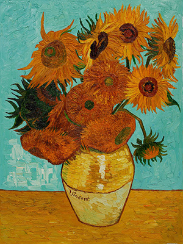1888.08
5. 밤의 카페 테라스
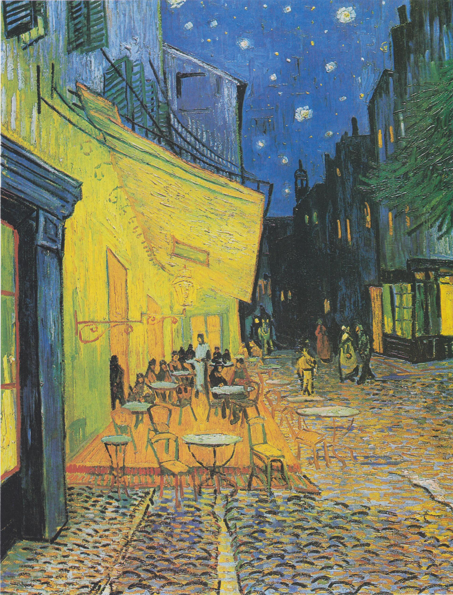1888.09
밤의 카페 테라스는 반 고흐가 프랑스 아를에 머무는 동안 완성한 첫 번째 작품으로 아를의 포룸 광장에 자리한 야외 카페의 밤 풍경을 담은 그림이다. 검은색을 전혀 사용하지 않고 밤 풍경을 표현하고 있으며, 레몬빛에 가까운 노란색으로 카페의 차양을 채색하는 등 짙은 파란색과 밝은 노란색의 강렬한 색채대비와 집들을 묘사할 때 원근법에 얽매이지 않고 실제보다 형태를 과장되게 묘사하여 격정적인 내면 세계를 적절하게 드러내고 있다.
6. 론강의 별이 빛나는 밤에
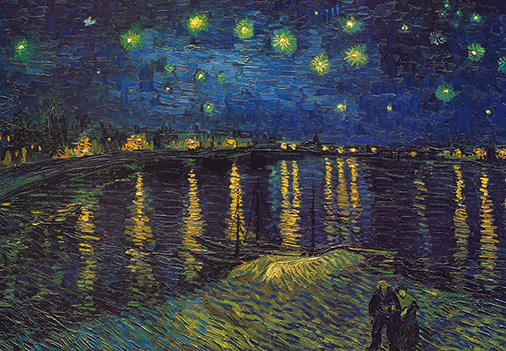1888.09
7. 노란 집
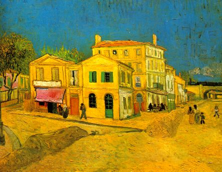1888.09
8. 아를의 침실
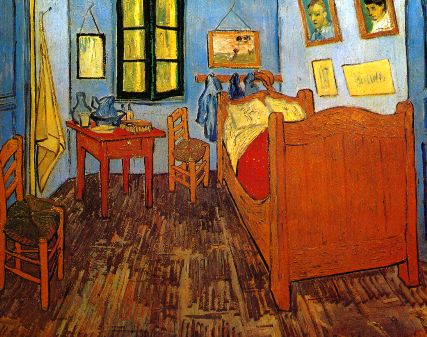1888.10
9. 귀에 붕대를 감은 자화상
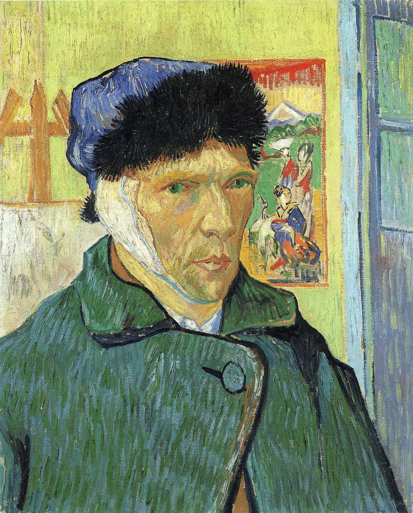1889
10. 별이 빛나는 밤
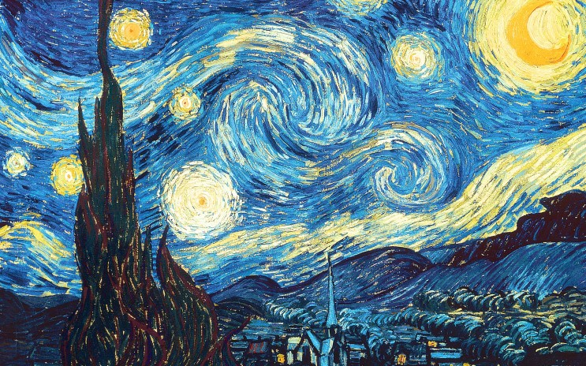1889
11. 붓꽃
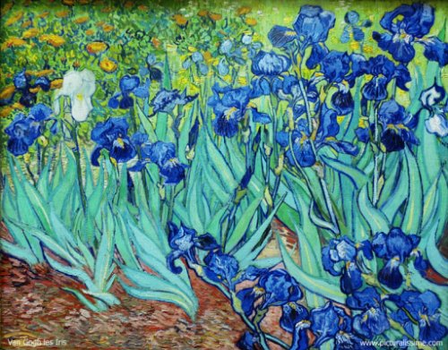1889.05
12. 사이프러스 나무
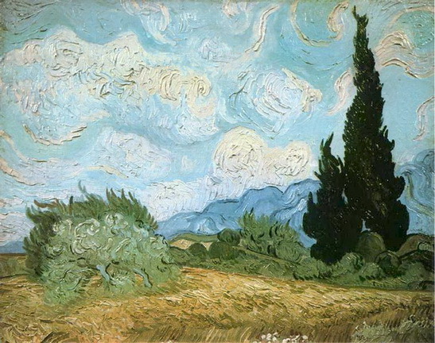1889.06
13. 자화상
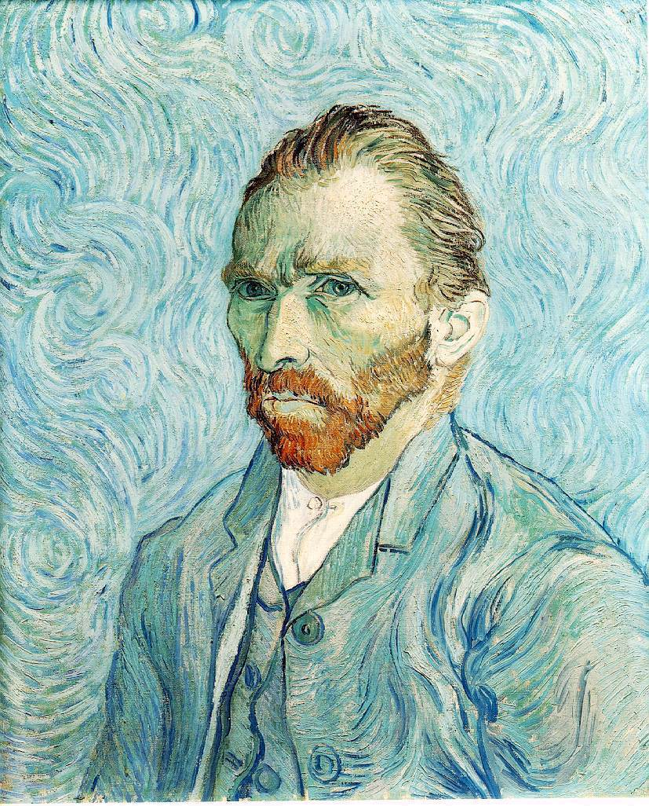1889.09
14. 까마귀 나는 밀밭
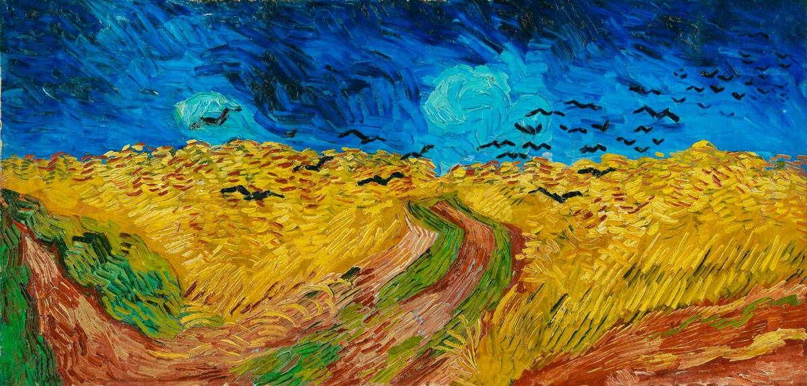1890.07
15. 나무 뿌리
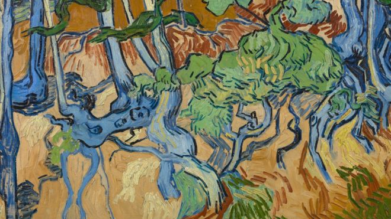1890.07